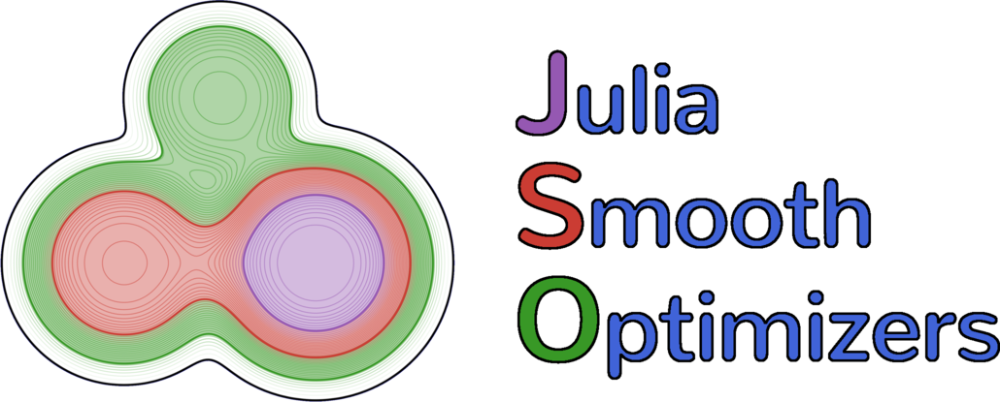

<!DOCTYPE html>
<HTML lang = "en">
<HEAD>
  <meta charset="UTF-8"/>
  <meta name="viewport" content="width=device-width, initial-scale=1.0, user-scalable=yes">
  <title>Creating a JSO compatible solver</title>
  

  <script type="text/x-mathjax-config">
    MathJax.Hub.Config({
      tex2jax: {inlineMath: [['$','$'], ['\\(','\\)']]},
      TeX: { equationNumbers: { autoNumber: "AMS" } }
    });
  </script>

  <script type="text/javascript" async src="https://cdnjs.cloudflare.com/ajax/libs/mathjax/2.7.1/MathJax.js?config=TeX-AMS-MML_HTMLorMML">
  </script>

  
<style>
pre.hljl {
    border: 1px solid #ccc;
    margin: 5px;
    padding: 5px;
    overflow-x: auto;
    color: rgb(68,68,68); background-color: rgb(251,251,251); }
pre.hljl > span.hljl-t { }
pre.hljl > span.hljl-w { }
pre.hljl > span.hljl-e { }
pre.hljl > span.hljl-eB { }
pre.hljl > span.hljl-o { }
pre.hljl > span.hljl-k { color: rgb(148,91,176); font-weight: bold; }
pre.hljl > span.hljl-kc { color: rgb(59,151,46); font-style: italic; }
pre.hljl > span.hljl-kd { color: rgb(214,102,97); font-style: italic; }
pre.hljl > span.hljl-kn { color: rgb(148,91,176); font-weight: bold; }
pre.hljl > span.hljl-kp { color: rgb(148,91,176); font-weight: bold; }
pre.hljl > span.hljl-kr { color: rgb(148,91,176); font-weight: bold; }
pre.hljl > span.hljl-kt { color: rgb(148,91,176); font-weight: bold; }
pre.hljl > span.hljl-n { }
pre.hljl > span.hljl-na { }
pre.hljl > span.hljl-nb { }
pre.hljl > span.hljl-nbp { }
pre.hljl > span.hljl-nc { }
pre.hljl > span.hljl-ncB { }
pre.hljl > span.hljl-nd { color: rgb(214,102,97); }
pre.hljl > span.hljl-ne { }
pre.hljl > span.hljl-neB { }
pre.hljl > span.hljl-nf { color: rgb(66,102,213); }
pre.hljl > span.hljl-nfm { color: rgb(66,102,213); }
pre.hljl > span.hljl-np { }
pre.hljl > span.hljl-nl { }
pre.hljl > span.hljl-nn { }
pre.hljl > span.hljl-no { }
pre.hljl > span.hljl-nt { }
pre.hljl > span.hljl-nv { }
pre.hljl > span.hljl-nvc { }
pre.hljl > span.hljl-nvg { }
pre.hljl > span.hljl-nvi { }
pre.hljl > span.hljl-nvm { }
pre.hljl > span.hljl-l { }
pre.hljl > span.hljl-ld { color: rgb(148,91,176); font-style: italic; }
pre.hljl > span.hljl-s { color: rgb(201,61,57); }
pre.hljl > span.hljl-sa { color: rgb(201,61,57); }
pre.hljl > span.hljl-sb { color: rgb(201,61,57); }
pre.hljl > span.hljl-sc { color: rgb(201,61,57); }
pre.hljl > span.hljl-sd { color: rgb(201,61,57); }
pre.hljl > span.hljl-sdB { color: rgb(201,61,57); }
pre.hljl > span.hljl-sdC { color: rgb(201,61,57); }
pre.hljl > span.hljl-se { color: rgb(59,151,46); }
pre.hljl > span.hljl-sh { color: rgb(201,61,57); }
pre.hljl > span.hljl-si { }
pre.hljl > span.hljl-so { color: rgb(201,61,57); }
pre.hljl > span.hljl-sr { color: rgb(201,61,57); }
pre.hljl > span.hljl-ss { color: rgb(201,61,57); }
pre.hljl > span.hljl-ssB { color: rgb(201,61,57); }
pre.hljl > span.hljl-nB { color: rgb(59,151,46); }
pre.hljl > span.hljl-nbB { color: rgb(59,151,46); }
pre.hljl > span.hljl-nfB { color: rgb(59,151,46); }
pre.hljl > span.hljl-nh { color: rgb(59,151,46); }
pre.hljl > span.hljl-ni { color: rgb(59,151,46); }
pre.hljl > span.hljl-nil { color: rgb(59,151,46); }
pre.hljl > span.hljl-noB { color: rgb(59,151,46); }
pre.hljl > span.hljl-oB { color: rgb(102,102,102); font-weight: bold; }
pre.hljl > span.hljl-ow { color: rgb(102,102,102); font-weight: bold; }
pre.hljl > span.hljl-p { }
pre.hljl > span.hljl-c { color: rgb(153,153,119); font-style: italic; }
pre.hljl > span.hljl-ch { color: rgb(153,153,119); font-style: italic; }
pre.hljl > span.hljl-cm { color: rgb(153,153,119); font-style: italic; }
pre.hljl > span.hljl-cp { color: rgb(153,153,119); font-style: italic; }
pre.hljl > span.hljl-cpB { color: rgb(153,153,119); font-style: italic; }
pre.hljl > span.hljl-cs { color: rgb(153,153,119); font-style: italic; }
pre.hljl > span.hljl-csB { color: rgb(153,153,119); font-style: italic; }
pre.hljl > span.hljl-g { }
pre.hljl > span.hljl-gd { }
pre.hljl > span.hljl-ge { }
pre.hljl > span.hljl-geB { }
pre.hljl > span.hljl-gh { }
pre.hljl > span.hljl-gi { }
pre.hljl > span.hljl-go { }
pre.hljl > span.hljl-gp { }
pre.hljl > span.hljl-gs { }
pre.hljl > span.hljl-gsB { }
pre.hljl > span.hljl-gt { }
</style>


  <style type="text/css">
  @font-face {
  font-style: normal;
  font-weight: 300;
}
@font-face {
  font-style: normal;
  font-weight: 400;
}
@font-face {
  font-style: normal;
  font-weight: 600;
}
html {
  font-family: sans-serif; /* 1 */
  -ms-text-size-adjust: 100%; /* 2 */
  -webkit-text-size-adjust: 100%; /* 2 */
}
body {
  margin: 0;
}
article,
aside,
details,
figcaption,
figure,
footer,
header,
hgroup,
main,
menu,
nav,
section,
summary {
  display: block;
}
audio,
canvas,
progress,
video {
  display: inline-block; /* 1 */
  vertical-align: baseline; /* 2 */
}
audio:not([controls]) {
  display: none;
  height: 0;
}
[hidden],
template {
  display: none;
}
a:active,
a:hover {
  outline: 0;
}
abbr[title] {
  border-bottom: 1px dotted;
}
b,
strong {
  font-weight: bold;
}
dfn {
  font-style: italic;
}
h1 {
  font-size: 2em;
  margin: 0.67em 0;
}
mark {
  background: #ff0;
  color: #000;
}
small {
  font-size: 80%;
}
sub,
sup {
  font-size: 75%;
  line-height: 0;
  position: relative;
  vertical-align: baseline;
}
sup {
  top: -0.5em;
}
sub {
  bottom: -0.25em;
}
img {
  border: 0;
}
svg:not(:root) {
  overflow: hidden;
}
figure {
  margin: 1em 40px;
}
hr {
  -moz-box-sizing: content-box;
  box-sizing: content-box;
  height: 0;
}
pre {
  overflow: auto;
}
code,
kbd,
pre,
samp {
  font-family: monospace, monospace;
  font-size: 1em;
}
button,
input,
optgroup,
select,
textarea {
  color: inherit; /* 1 */
  font: inherit; /* 2 */
  margin: 0; /* 3 */
}
button {
  overflow: visible;
}
button,
select {
  text-transform: none;
}
button,
html input[type="button"], /* 1 */
input[type="reset"],
input[type="submit"] {
  -webkit-appearance: button; /* 2 */
  cursor: pointer; /* 3 */
}
button[disabled],
html input[disabled] {
  cursor: default;
}
button::-moz-focus-inner,
input::-moz-focus-inner {
  border: 0;
  padding: 0;
}
input {
  line-height: normal;
}
input[type="checkbox"],
input[type="radio"] {
  box-sizing: border-box; /* 1 */
  padding: 0; /* 2 */
}
input[type="number"]::-webkit-inner-spin-button,
input[type="number"]::-webkit-outer-spin-button {
  height: auto;
}
input[type="search"] {
  -webkit-appearance: textfield; /* 1 */
  -moz-box-sizing: content-box;
  -webkit-box-sizing: content-box; /* 2 */
  box-sizing: content-box;
}
input[type="search"]::-webkit-search-cancel-button,
input[type="search"]::-webkit-search-decoration {
  -webkit-appearance: none;
}
fieldset {
  border: 1px solid #c0c0c0;
  margin: 0 2px;
  padding: 0.35em 0.625em 0.75em;
}
legend {
  border: 0; /* 1 */
  padding: 0; /* 2 */
}
textarea {
  overflow: auto;
}
optgroup {
  font-weight: bold;
}
table {
  font-family: monospace, monospace;
  font-size : 0.8em;
  border-collapse: collapse;
  border-spacing: 0;
}
td,
th {
  padding: 0;
}
thead th {
    border-bottom: 1px solid black;
    background-color: white;
}
tr:nth-child(odd){
  background-color: rgb(248,248,248);
}


/*
* Skeleton V2.0.4
* Copyright 2014, Dave Gamache
* www.getskeleton.com
* Free to use under the MIT license.
* http://www.opensource.org/licenses/mit-license.php
* 12/29/2014
*/
.container {
  position: relative;
  width: 100%;
  max-width: 960px;
  margin: 0 auto;
  padding: 0 20px;
  box-sizing: border-box; }
.column,
.columns {
  width: 100%;
  float: left;
  box-sizing: border-box; }
@media (min-width: 400px) {
  .container {
    width: 85%;
    padding: 0; }
}
@media (min-width: 550px) {
  .container {
    width: 80%; }
  .column,
  .columns {
    margin-left: 4%; }
  .column:first-child,
  .columns:first-child {
    margin-left: 0; }

  .one.column,
  .one.columns                    { width: 4.66666666667%; }
  .two.columns                    { width: 13.3333333333%; }
  .three.columns                  { width: 22%;            }
  .four.columns                   { width: 30.6666666667%; }
  .five.columns                   { width: 39.3333333333%; }
  .six.columns                    { width: 48%;            }
  .seven.columns                  { width: 56.6666666667%; }
  .eight.columns                  { width: 65.3333333333%; }
  .nine.columns                   { width: 74.0%;          }
  .ten.columns                    { width: 82.6666666667%; }
  .eleven.columns                 { width: 91.3333333333%; }
  .twelve.columns                 { width: 100%; margin-left: 0; }

  .one-third.column               { width: 30.6666666667%; }
  .two-thirds.column              { width: 65.3333333333%; }

  .one-half.column                { width: 48%; }

  /* Offsets */
  .offset-by-one.column,
  .offset-by-one.columns          { margin-left: 8.66666666667%; }
  .offset-by-two.column,
  .offset-by-two.columns          { margin-left: 17.3333333333%; }
  .offset-by-three.column,
  .offset-by-three.columns        { margin-left: 26%;            }
  .offset-by-four.column,
  .offset-by-four.columns         { margin-left: 34.6666666667%; }
  .offset-by-five.column,
  .offset-by-five.columns         { margin-left: 43.3333333333%; }
  .offset-by-six.column,
  .offset-by-six.columns          { margin-left: 52%;            }
  .offset-by-seven.column,
  .offset-by-seven.columns        { margin-left: 60.6666666667%; }
  .offset-by-eight.column,
  .offset-by-eight.columns        { margin-left: 69.3333333333%; }
  .offset-by-nine.column,
  .offset-by-nine.columns         { margin-left: 78.0%;          }
  .offset-by-ten.column,
  .offset-by-ten.columns          { margin-left: 86.6666666667%; }
  .offset-by-eleven.column,
  .offset-by-eleven.columns       { margin-left: 95.3333333333%; }

  .offset-by-one-third.column,
  .offset-by-one-third.columns    { margin-left: 34.6666666667%; }
  .offset-by-two-thirds.column,
  .offset-by-two-thirds.columns   { margin-left: 69.3333333333%; }

  .offset-by-one-half.column,
  .offset-by-one-half.columns     { margin-left: 52%; }

}
html {
  font-size: 62.5%; }
body {
  font-size: 1.5em; /* currently ems cause chrome bug misinterpreting rems on body element */
  line-height: 1.6;
  font-weight: 400;
  font-family: "Raleway", "HelveticaNeue", "Helvetica Neue", Helvetica, Arial, sans-serif;
  color: #222; }
h1, h2, h3, h4, h5, h6 {
  margin-top: 0;
  margin-bottom: 2rem;
  font-weight: 300; }
h1 { font-size: 3.6rem; line-height: 1.2;  letter-spacing: -.1rem;}
h2 { font-size: 3.4rem; line-height: 1.25; letter-spacing: -.1rem; }
h3 { font-size: 3.2rem; line-height: 1.3;  letter-spacing: -.1rem; }
h4 { font-size: 2.8rem; line-height: 1.35; letter-spacing: -.08rem; }
h5 { font-size: 2.4rem; line-height: 1.5;  letter-spacing: -.05rem; }
h6 { font-size: 1.5rem; line-height: 1.6;  letter-spacing: 0; }

p {
  margin-top: 0; }
a {
  color: #1EAEDB; }
a:hover {
  color: #0FA0CE; }
.button,
button,
input[type="submit"],
input[type="reset"],
input[type="button"] {
  display: inline-block;
  height: 38px;
  padding: 0 30px;
  color: #555;
  text-align: center;
  font-size: 11px;
  font-weight: 600;
  line-height: 38px;
  letter-spacing: .1rem;
  text-transform: uppercase;
  text-decoration: none;
  white-space: nowrap;
  background-color: transparent;
  border-radius: 4px;
  border: 1px solid #bbb;
  cursor: pointer;
  box-sizing: border-box; }
.button:hover,
button:hover,
input[type="submit"]:hover,
input[type="reset"]:hover,
input[type="button"]:hover,
.button:focus,
button:focus,
input[type="submit"]:focus,
input[type="reset"]:focus,
input[type="button"]:focus {
  color: #333;
  border-color: #888;
  outline: 0; }
.button.button-primary,
button.button-primary,
input[type="submit"].button-primary,
input[type="reset"].button-primary,
input[type="button"].button-primary {
  color: #FFF;
  background-color: #33C3F0;
  border-color: #33C3F0; }
.button.button-primary:hover,
button.button-primary:hover,
input[type="submit"].button-primary:hover,
input[type="reset"].button-primary:hover,
input[type="button"].button-primary:hover,
.button.button-primary:focus,
button.button-primary:focus,
input[type="submit"].button-primary:focus,
input[type="reset"].button-primary:focus,
input[type="button"].button-primary:focus {
  color: #FFF;
  background-color: #1EAEDB;
  border-color: #1EAEDB; }
input[type="email"],
input[type="number"],
input[type="search"],
input[type="text"],
input[type="tel"],
input[type="url"],
input[type="password"],
textarea,
select {
  height: 38px;
  padding: 6px 10px; /* The 6px vertically centers text on FF, ignored by Webkit */
  background-color: #fff;
  border: 1px solid #D1D1D1;
  border-radius: 4px;
  box-shadow: none;
  box-sizing: border-box; }
/* Removes awkward default styles on some inputs for iOS */
input[type="email"],
input[type="number"],
input[type="search"],
input[type="text"],
input[type="tel"],
input[type="url"],
input[type="password"],
textarea {
  -webkit-appearance: none;
     -moz-appearance: none;
          appearance: none; }
textarea {
  min-height: 65px;
  padding-top: 6px;
  padding-bottom: 6px; }
input[type="email"]:focus,
input[type="number"]:focus,
input[type="search"]:focus,
input[type="text"]:focus,
input[type="tel"]:focus,
input[type="url"]:focus,
input[type="password"]:focus,
textarea:focus,
select:focus {
  border: 1px solid #33C3F0;
  outline: 0; }
label,
legend {
  display: block;
  margin-bottom: .5rem;
  font-weight: 600; }
fieldset {
  padding: 0;
  border-width: 0; }
input[type="checkbox"],
input[type="radio"] {
  display: inline; }
label > .label-body {
  display: inline-block;
  margin-left: .5rem;
  font-weight: normal; }
ul {
  list-style: circle; }
ol {
  list-style: decimal; }
ul ul,
ul ol,
ol ol,
ol ul {
  margin: 1.5rem 0 1.5rem 3rem;
  font-size: 90%; }
li > p {margin : 0;}
th,
td {
  padding: 12px 15px;
  text-align: left;
  border-bottom: 1px solid #E1E1E1; }
th:first-child,
td:first-child {
  padding-left: 0; }
th:last-child,
td:last-child {
  padding-right: 0; }
button,
.button {
  margin-bottom: 1rem; }
input,
textarea,
select,
fieldset {
  margin-bottom: 1.5rem; }
pre,
blockquote,
dl,
figure,
table,
p,
ul,
ol,
form {
  margin-bottom: 1.0rem; }
.u-full-width {
  width: 100%;
  box-sizing: border-box; }
.u-max-full-width {
  max-width: 100%;
  box-sizing: border-box; }
.u-pull-right {
  float: right; }
.u-pull-left {
  float: left; }
hr {
  margin-top: 3rem;
  margin-bottom: 3.5rem;
  border-width: 0;
  border-top: 1px solid #E1E1E1; }
.container:after,
.row:after,
.u-cf {
  content: "";
  display: table;
  clear: both; }

pre {
  display: block;
  padding: 9.5px;
  margin: 0 0 10px;
  font-size: 13px;
  line-height: 1.42857143;
  word-break: break-all;
  word-wrap: break-word;
  border: 1px solid #ccc;
  border-radius: 4px;
}

pre.hljl {
  margin: 0 0 10px;
  display: block;
  background: #f5f5f5;
  border-radius: 4px;
  padding : 5px;
}

pre.output {
  background: #ffffff;
}

pre.code {
  background: #ffffff;
}

pre.julia-error {
  color : red
}

code,
kbd,
pre,
samp {
  font-family: Menlo, Monaco, Consolas, "Courier New", monospace;
  font-size: 13px;
}


@media (min-width: 400px) {}
@media (min-width: 550px) {}
@media (min-width: 750px) {}
@media (min-width: 1000px) {}
@media (min-width: 1200px) {}

h1.title {margin-top : 20px}
img {max-width : 100%}
div.title {text-align: center;}

  </style>


</HEAD>
  <BODY>
    <div class ="container">
      <div class = "row">
        <div class = "col-md-12 twelve columns">

          <div class="title">
            <h1 class="title">Creating a JSO compatible solver</h1>
            <h5>João Okimoto</h5>
            
          </div>

          <p></p>


<pre class='hljl'>
<span class='hljl-k'>using</span><span class='hljl-t'> </span><span class='hljl-n'>Pkg</span><span class='hljl-t'>
</span><span class='hljl-so'>pkg&quot;activate .&quot;</span><span class='hljl-t'>
</span><span class='hljl-k'>if</span><span class='hljl-t'> </span><span class='hljl-kc'>false</span><span class='hljl-t'>
 </span><span class='hljl-so'>pkg&quot;add NLPModels&quot;</span><span class='hljl-t'>
 </span><span class='hljl-so'>pkg&quot;add SolverTools&quot;</span><span class='hljl-t'>
 </span><span class='hljl-so'>pkg&quot;add SolverBenchmark&quot;</span><span class='hljl-t'>
 </span><span class='hljl-so'>pkg&quot;add Plots&quot;</span><span class='hljl-t'>
 </span><span class='hljl-so'>pkg&quot;add LinearAlgebra&quot;</span><span class='hljl-t'>
 </span><span class='hljl-so'>pkg&quot;add JSOSolvers&quot;</span><span class='hljl-t'>
</span><span class='hljl-k'>end</span><span class='hljl-t'>
</span><span class='hljl-so'>pkg&quot;instantiate&quot;</span>
</pre>


<pre class="output">
Updating registry at &#96;~/.julia/registries/General&#96;
  Updating git-repo &#96;https://github.com/JuliaRegistries/General.git&#96;
&#91;?25l&#91;2K&#91;?25h
</pre>


<pre class='hljl'>
<span class='hljl-so'>pkg&quot;status&quot;</span>
</pre>


<pre class="output">
Status &#96;~/repos/JSOTutorials.jl/basics/create-a-solver/Project.toml&#96;
  &#91;10dff2fc&#93; JSOSolvers v0.1.0
  &#91;a4795742&#93; NLPModels v0.9.0
  &#91;91a5bcdd&#93; Plots v0.28.1
  &#91;581a75fa&#93; SolverBenchmark v0.1.0
  &#91;b5612192&#93; SolverTools v0.1.6
  &#91;37e2e46d&#93; LinearAlgebra
</pre>


<p>This tutorial covers the basics on how to create a solver compatible with the JuliaSmoothOptimizers format and do basic benchmarking. Let&#39;s start off with a simple implementation of Newton&#39;s method:</p>


<pre class='hljl'>
<span class='hljl-k'>using</span><span class='hljl-t'> </span><span class='hljl-n'>NLPModels</span><span class='hljl-p'>,</span><span class='hljl-t'> </span><span class='hljl-n'>LinearAlgebra</span><span class='hljl-p'>,</span><span class='hljl-t'> </span><span class='hljl-n'>SolverTools</span><span class='hljl-t'>

</span><span class='hljl-k'>function</span><span class='hljl-t'> </span><span class='hljl-nf'>newton</span><span class='hljl-p'>(</span><span class='hljl-n'>nlp</span><span class='hljl-t'> </span><span class='hljl-oB'>::</span><span class='hljl-t'> </span><span class='hljl-n'>AbstractNLPModel</span><span class='hljl-p'>;</span><span class='hljl-t'>
                </span><span class='hljl-n'>x</span><span class='hljl-t'> </span><span class='hljl-oB'>::</span><span class='hljl-t'> </span><span class='hljl-n'>AbstractVector</span><span class='hljl-t'> </span><span class='hljl-oB'>=</span><span class='hljl-t'> </span><span class='hljl-nf'>copy</span><span class='hljl-p'>(</span><span class='hljl-n'>nlp</span><span class='hljl-oB'>.</span><span class='hljl-n'>meta</span><span class='hljl-oB'>.</span><span class='hljl-n'>x0</span><span class='hljl-p'>),</span><span class='hljl-t'>
                </span><span class='hljl-n'>max_tol</span><span class='hljl-t'> </span><span class='hljl-oB'>::</span><span class='hljl-t'> </span><span class='hljl-n'>Real</span><span class='hljl-t'> </span><span class='hljl-oB'>=</span><span class='hljl-t'> </span><span class='hljl-oB'>√</span><span class='hljl-nf'>eps</span><span class='hljl-p'>(</span><span class='hljl-nf'>eltype</span><span class='hljl-p'>(</span><span class='hljl-n'>x</span><span class='hljl-p'>)),</span><span class='hljl-t'>
                </span><span class='hljl-n'>max_time</span><span class='hljl-t'> </span><span class='hljl-oB'>::</span><span class='hljl-t'> </span><span class='hljl-n'>Float64</span><span class='hljl-t'> </span><span class='hljl-oB'>=</span><span class='hljl-t'> </span><span class='hljl-nfB'>30.0</span><span class='hljl-p'>,</span><span class='hljl-t'>
                </span><span class='hljl-n'>max_iter</span><span class='hljl-t'> </span><span class='hljl-oB'>::</span><span class='hljl-t'> </span><span class='hljl-n'>Int</span><span class='hljl-t'> </span><span class='hljl-oB'>=</span><span class='hljl-t'> </span><span class='hljl-ni'>100</span><span class='hljl-p'>)</span><span class='hljl-t'>

  </span><span class='hljl-n'>T</span><span class='hljl-t'> </span><span class='hljl-oB'>=</span><span class='hljl-t'> </span><span class='hljl-nf'>eltype</span><span class='hljl-p'>(</span><span class='hljl-n'>x</span><span class='hljl-p'>)</span><span class='hljl-t'>
  </span><span class='hljl-n'>k</span><span class='hljl-t'> </span><span class='hljl-oB'>=</span><span class='hljl-t'> </span><span class='hljl-ni'>0</span><span class='hljl-t'>
  </span><span class='hljl-n'>el_time</span><span class='hljl-t'> </span><span class='hljl-oB'>=</span><span class='hljl-t'> </span><span class='hljl-nfB'>0.0</span><span class='hljl-t'>
  </span><span class='hljl-n'>start_time</span><span class='hljl-t'> </span><span class='hljl-oB'>=</span><span class='hljl-t'> </span><span class='hljl-nf'>time</span><span class='hljl-p'>()</span><span class='hljl-t'>
  </span><span class='hljl-n'>tired</span><span class='hljl-t'> </span><span class='hljl-oB'>=</span><span class='hljl-t'> </span><span class='hljl-n'>el_time</span><span class='hljl-t'> </span><span class='hljl-oB'>&gt;</span><span class='hljl-t'> </span><span class='hljl-n'>max_time</span><span class='hljl-t'> </span><span class='hljl-oB'>||</span><span class='hljl-t'> </span><span class='hljl-n'>k</span><span class='hljl-t'> </span><span class='hljl-oB'>≥</span><span class='hljl-t'> </span><span class='hljl-n'>max_iter</span><span class='hljl-t'>
  </span><span class='hljl-n'>optimal</span><span class='hljl-t'> </span><span class='hljl-oB'>=</span><span class='hljl-t'> </span><span class='hljl-nf'>norm</span><span class='hljl-p'>(</span><span class='hljl-nf'>grad</span><span class='hljl-p'>(</span><span class='hljl-n'>nlp</span><span class='hljl-p'>,</span><span class='hljl-t'> </span><span class='hljl-n'>x</span><span class='hljl-p'>))</span><span class='hljl-t'> </span><span class='hljl-oB'>&lt;</span><span class='hljl-t'> </span><span class='hljl-n'>max_tol</span><span class='hljl-t'>

  </span><span class='hljl-nd'>@info</span><span class='hljl-t'> </span><span class='hljl-nf'>log_header</span><span class='hljl-p'>([</span><span class='hljl-sc'>:iter</span><span class='hljl-p'>,</span><span class='hljl-t'> </span><span class='hljl-sc'>:f</span><span class='hljl-p'>,</span><span class='hljl-t'> </span><span class='hljl-sc'>:nrmgrad</span><span class='hljl-p'>],</span><span class='hljl-t'> </span><span class='hljl-p'>[</span><span class='hljl-n'>Int</span><span class='hljl-p'>,</span><span class='hljl-t'> </span><span class='hljl-n'>T</span><span class='hljl-p'>,</span><span class='hljl-t'> </span><span class='hljl-n'>T</span><span class='hljl-p'>],</span><span class='hljl-t'> </span><span class='hljl-n'>hdr_override</span><span class='hljl-oB'>=</span><span class='hljl-nf'>Dict</span><span class='hljl-p'>(</span><span class='hljl-sc'>:f</span><span class='hljl-t'> </span><span class='hljl-oB'>=&gt;</span><span class='hljl-t'> </span><span class='hljl-s'>&quot;f(x)&quot;</span><span class='hljl-p'>,</span><span class='hljl-t'> </span><span class='hljl-sc'>:nrmgrad</span><span class='hljl-t'> </span><span class='hljl-oB'>=&gt;</span><span class='hljl-t'> </span><span class='hljl-s'>&quot;‖∇f(x)‖&quot;</span><span class='hljl-p'>))</span><span class='hljl-t'>

  </span><span class='hljl-k'>while</span><span class='hljl-t'> </span><span class='hljl-oB'>!</span><span class='hljl-p'>(</span><span class='hljl-n'>optimal</span><span class='hljl-t'> </span><span class='hljl-oB'>||</span><span class='hljl-t'> </span><span class='hljl-n'>tired</span><span class='hljl-p'>)</span><span class='hljl-t'>

    </span><span class='hljl-n'>fx</span><span class='hljl-t'> </span><span class='hljl-oB'>=</span><span class='hljl-t'> </span><span class='hljl-nf'>obj</span><span class='hljl-p'>(</span><span class='hljl-n'>nlp</span><span class='hljl-p'>,</span><span class='hljl-t'> </span><span class='hljl-n'>x</span><span class='hljl-p'>)</span><span class='hljl-t'>
    </span><span class='hljl-n'>∇fx</span><span class='hljl-t'> </span><span class='hljl-oB'>=</span><span class='hljl-t'> </span><span class='hljl-nf'>grad</span><span class='hljl-p'>(</span><span class='hljl-n'>nlp</span><span class='hljl-p'>,</span><span class='hljl-t'> </span><span class='hljl-n'>x</span><span class='hljl-p'>)</span><span class='hljl-t'>
    </span><span class='hljl-n'>nrmgrad</span><span class='hljl-t'> </span><span class='hljl-oB'>=</span><span class='hljl-t'> </span><span class='hljl-nf'>norm</span><span class='hljl-p'>(</span><span class='hljl-n'>∇fx</span><span class='hljl-p'>)</span><span class='hljl-t'>
    </span><span class='hljl-n'>∇²fx</span><span class='hljl-t'> </span><span class='hljl-oB'>=</span><span class='hljl-t'> </span><span class='hljl-nf'>Symmetric</span><span class='hljl-p'>(</span><span class='hljl-nf'>hess</span><span class='hljl-p'>(</span><span class='hljl-n'>nlp</span><span class='hljl-p'>,</span><span class='hljl-t'> </span><span class='hljl-n'>x</span><span class='hljl-p'>),</span><span class='hljl-t'> </span><span class='hljl-sc'>:L</span><span class='hljl-p'>)</span><span class='hljl-t'>

    </span><span class='hljl-nd'>@info</span><span class='hljl-t'> </span><span class='hljl-nf'>log_row</span><span class='hljl-p'>(</span><span class='hljl-n'>Any</span><span class='hljl-p'>[</span><span class='hljl-n'>k</span><span class='hljl-p'>,</span><span class='hljl-t'> </span><span class='hljl-n'>fx</span><span class='hljl-p'>,</span><span class='hljl-t'> </span><span class='hljl-n'>nrmgrad</span><span class='hljl-p'>])</span><span class='hljl-t'>

    </span><span class='hljl-n'>d</span><span class='hljl-t'> </span><span class='hljl-oB'>=</span><span class='hljl-t'> </span><span class='hljl-nf'>isposdef</span><span class='hljl-p'>(</span><span class='hljl-n'>∇²fx</span><span class='hljl-p'>)</span><span class='hljl-t'> </span><span class='hljl-oB'>?</span><span class='hljl-t'> </span><span class='hljl-n'>∇²fx</span><span class='hljl-oB'>\</span><span class='hljl-t'> </span><span class='hljl-oB'>-</span><span class='hljl-n'>∇fx</span><span class='hljl-t'> </span><span class='hljl-oB'>:</span><span class='hljl-t'> </span><span class='hljl-oB'>-</span><span class='hljl-n'>∇fx</span><span class='hljl-t'>
    </span><span class='hljl-n'>t</span><span class='hljl-t'> </span><span class='hljl-oB'>=</span><span class='hljl-t'> </span><span class='hljl-nf'>one</span><span class='hljl-p'>(</span><span class='hljl-n'>T</span><span class='hljl-p'>)</span><span class='hljl-t'>
    </span><span class='hljl-n'>α</span><span class='hljl-t'> </span><span class='hljl-oB'>=</span><span class='hljl-t'> </span><span class='hljl-nfB'>0.5</span><span class='hljl-t'>

    </span><span class='hljl-k'>while</span><span class='hljl-t'> </span><span class='hljl-nf'>obj</span><span class='hljl-p'>(</span><span class='hljl-n'>nlp</span><span class='hljl-p'>,</span><span class='hljl-t'> </span><span class='hljl-n'>x</span><span class='hljl-t'> </span><span class='hljl-oB'>+</span><span class='hljl-t'> </span><span class='hljl-n'>t</span><span class='hljl-oB'>*</span><span class='hljl-n'>d</span><span class='hljl-p'>)</span><span class='hljl-t'> </span><span class='hljl-oB'>&gt;</span><span class='hljl-t'> </span><span class='hljl-n'>fx</span><span class='hljl-t'> </span><span class='hljl-oB'>+</span><span class='hljl-t'> </span><span class='hljl-n'>α</span><span class='hljl-t'> </span><span class='hljl-oB'>*</span><span class='hljl-t'> </span><span class='hljl-n'>∇fx</span><span class='hljl-oB'>&#39;</span><span class='hljl-t'> </span><span class='hljl-oB'>*</span><span class='hljl-t'> </span><span class='hljl-n'>t</span><span class='hljl-t'> </span><span class='hljl-oB'>*</span><span class='hljl-t'> </span><span class='hljl-n'>d</span><span class='hljl-t'>
      </span><span class='hljl-n'>t</span><span class='hljl-t'> </span><span class='hljl-oB'>*=</span><span class='hljl-t'> </span><span class='hljl-nfB'>0.5</span><span class='hljl-t'>
    </span><span class='hljl-k'>end</span><span class='hljl-t'>

    </span><span class='hljl-n'>x</span><span class='hljl-t'> </span><span class='hljl-oB'>+=</span><span class='hljl-t'> </span><span class='hljl-n'>t</span><span class='hljl-oB'>*</span><span class='hljl-n'>d</span><span class='hljl-t'>

    </span><span class='hljl-n'>k</span><span class='hljl-t'> </span><span class='hljl-oB'>+=</span><span class='hljl-t'> </span><span class='hljl-ni'>1</span><span class='hljl-t'>
    </span><span class='hljl-n'>el_time</span><span class='hljl-t'> </span><span class='hljl-oB'>=</span><span class='hljl-t'> </span><span class='hljl-nf'>time</span><span class='hljl-p'>()</span><span class='hljl-t'> </span><span class='hljl-oB'>-</span><span class='hljl-t'> </span><span class='hljl-n'>start_time</span><span class='hljl-t'>
    </span><span class='hljl-n'>tired</span><span class='hljl-t'> </span><span class='hljl-oB'>=</span><span class='hljl-t'> </span><span class='hljl-n'>el_time</span><span class='hljl-t'> </span><span class='hljl-oB'>&gt;</span><span class='hljl-t'> </span><span class='hljl-n'>max_time</span><span class='hljl-t'> </span><span class='hljl-oB'>||</span><span class='hljl-t'> </span><span class='hljl-n'>k</span><span class='hljl-t'> </span><span class='hljl-oB'>≥</span><span class='hljl-t'> </span><span class='hljl-n'>max_iter</span><span class='hljl-t'>
    </span><span class='hljl-n'>optimal</span><span class='hljl-t'> </span><span class='hljl-oB'>=</span><span class='hljl-t'> </span><span class='hljl-n'>nrmgrad</span><span class='hljl-t'> </span><span class='hljl-oB'>&lt;</span><span class='hljl-t'> </span><span class='hljl-n'>max_tol</span><span class='hljl-t'>
  </span><span class='hljl-k'>end</span><span class='hljl-t'>

  </span><span class='hljl-k'>if</span><span class='hljl-t'> </span><span class='hljl-n'>optimal</span><span class='hljl-t'>
    </span><span class='hljl-n'>status</span><span class='hljl-t'> </span><span class='hljl-oB'>=:</span><span class='hljl-n'>first_order</span><span class='hljl-t'>
  </span><span class='hljl-k'>elseif</span><span class='hljl-t'> </span><span class='hljl-n'>tired</span><span class='hljl-t'>
    </span><span class='hljl-k'>if</span><span class='hljl-t'> </span><span class='hljl-n'>k</span><span class='hljl-t'> </span><span class='hljl-oB'>≥</span><span class='hljl-t'> </span><span class='hljl-n'>max_iter</span><span class='hljl-t'>
      </span><span class='hljl-n'>status</span><span class='hljl-t'> </span><span class='hljl-oB'>=:</span><span class='hljl-n'>max_iter</span><span class='hljl-t'>
    </span><span class='hljl-k'>else</span><span class='hljl-t'>
      </span><span class='hljl-n'>status</span><span class='hljl-t'> </span><span class='hljl-oB'>=:</span><span class='hljl-n'>max_time</span><span class='hljl-t'>
    </span><span class='hljl-k'>end</span><span class='hljl-t'>
  </span><span class='hljl-k'>else</span><span class='hljl-t'>
    </span><span class='hljl-n'>status</span><span class='hljl-t'> </span><span class='hljl-oB'>=:</span><span class='hljl-n'>unknown</span><span class='hljl-t'>
  </span><span class='hljl-k'>end</span><span class='hljl-t'>

  </span><span class='hljl-k'>return</span><span class='hljl-t'> </span><span class='hljl-nf'>GenericExecutionStats</span><span class='hljl-p'>(</span><span class='hljl-n'>status</span><span class='hljl-p'>,</span><span class='hljl-t'> </span><span class='hljl-n'>nlp</span><span class='hljl-p'>,</span><span class='hljl-t'> </span><span class='hljl-n'>solution</span><span class='hljl-oB'>=</span><span class='hljl-n'>x</span><span class='hljl-p'>,</span><span class='hljl-t'> </span><span class='hljl-n'>objective</span><span class='hljl-oB'>=</span><span class='hljl-nf'>obj</span><span class='hljl-p'>(</span><span class='hljl-n'>nlp</span><span class='hljl-p'>,</span><span class='hljl-t'> </span><span class='hljl-n'>x</span><span class='hljl-p'>),</span><span class='hljl-t'>
                               </span><span class='hljl-n'>iter</span><span class='hljl-t'> </span><span class='hljl-oB'>=</span><span class='hljl-t'> </span><span class='hljl-n'>k</span><span class='hljl-p'>,</span><span class='hljl-t'> </span><span class='hljl-n'>elapsed_time</span><span class='hljl-t'> </span><span class='hljl-oB'>=</span><span class='hljl-t'> </span><span class='hljl-n'>el_time</span><span class='hljl-p'>)</span><span class='hljl-t'>

</span><span class='hljl-k'>end</span>
</pre>


<pre class="output">
newton &#40;generic function with 1 method&#41;
</pre>


<p>As you can see in the example above, our <code>newton</code> solver has a few important features:</p>
<ul>
<li><p>It receives the <strong>JSO Standard input</strong>, an <strong>AbtractNLPModel</strong>, part of the <a href="https://github.com/JuliaSmoothOptimizers/NLPModels.jl">NLPModels</a> package.</p>
</li>
<li><p>Derivatives are computed according to the <strong>AbstractNLPModel</strong> implementation with the <span class="math">$hess$</span> and <span class="math">$grad$</span> functions.</p>
</li>
<li><p>It returns the <strong>JSO Standard output</strong>, a <strong>GenericExecutionStats</strong>, part of the <a href="https://github.com/JuliaSmoothOptimizers/SolverTools.jl">SolverTools</a> package.</p>
</li>
</ul>
<p>Both input and output are important when interacting with other JSO packages, since they serve as a way of solving a optimization problem while also keeping track of relevant information. An <strong>AbstractNLPModel</strong> is the main structure of the problem, as it contains details regarding its description &#40;i.e function to be minimized, starting point, number of variables, etc.&#41;, while a <strong>GenericExecutionStats</strong> is responsible for carrying information over how the problem was solved &#40;i.e number of iterations, time elapsed, number of function evaluations, etc.&#41;.</p>
<p>Another important thing to highlight, is that we&#39;ll be using the <strong>ADNLPModel</strong> struct to run our solver. By default, the package responsible for calculating derivatives is <a href="https://github.com/JuliaDiff/ForwardDiff.jl">ForwardDiff</a> since that&#39;s the built in method for differentation in this <strong>AbstractNLPModel</strong> implementation.</p>
<p>When creating a new JSO compatible solver, it&#39;s also important to manipulate the output data to match that of <strong>GenericExecutionStats</strong>. The <span class="math">$status$</span> attribute tells us about how our solver did given our input problem. It is possible that the number of iterations has exceed the max limit, or the time it took for it to solve was greater than allowed. Either way, the <span class="math">$status$</span> is an important attribute when benchmarking and testing, as it allows the user to keep track of how a solver behaves over a specific problem.</p>
<p>If we want to run our solver, we simply need to create a optimization problem</p>


<pre class='hljl'>
<span class='hljl-nf'>f</span><span class='hljl-p'>(</span><span class='hljl-n'>x</span><span class='hljl-p'>)</span><span class='hljl-t'> </span><span class='hljl-oB'>=</span><span class='hljl-t'> </span><span class='hljl-p'>(</span><span class='hljl-n'>x</span><span class='hljl-p'>[</span><span class='hljl-ni'>1</span><span class='hljl-p'>]</span><span class='hljl-oB'>^</span><span class='hljl-ni'>2</span><span class='hljl-t'> </span><span class='hljl-oB'>+</span><span class='hljl-t'> </span><span class='hljl-n'>x</span><span class='hljl-p'>[</span><span class='hljl-ni'>2</span><span class='hljl-p'>]</span><span class='hljl-oB'>^</span><span class='hljl-ni'>2</span><span class='hljl-p'>)</span><span class='hljl-oB'>^</span><span class='hljl-ni'>2</span><span class='hljl-t'>
  </span><span class='hljl-n'>problem</span><span class='hljl-t'> </span><span class='hljl-oB'>=</span><span class='hljl-t'> </span><span class='hljl-nf'>ADNLPModel</span><span class='hljl-p'>(</span><span class='hljl-n'>f</span><span class='hljl-p'>,</span><span class='hljl-t'> </span><span class='hljl-p'>[</span><span class='hljl-nfB'>1.0</span><span class='hljl-p'>,</span><span class='hljl-nfB'>2.0</span><span class='hljl-p'>])</span><span class='hljl-t'>
  </span><span class='hljl-n'>output</span><span class='hljl-t'> </span><span class='hljl-oB'>=</span><span class='hljl-t'> </span><span class='hljl-nf'>newton</span><span class='hljl-p'>(</span><span class='hljl-n'>problem</span><span class='hljl-p'>)</span>
</pre>


<pre class="output">
&quot;Execution stats: first-order stationary&quot;
</pre>


<p>whose information regarding its solution is stored in <span class="math">$output$</span>.</p>


<pre class='hljl'>
<span class='hljl-nf'>print</span><span class='hljl-p'>(</span><span class='hljl-n'>output</span><span class='hljl-p'>)</span>
</pre>


<pre class="output">
Generic Execution stats
  status: &quot;first-order stationary&quot;
  objective value: 1.0351524645125576e-12
  primal feasibility: 0.0
  dual feasibility: Inf
  primal feasibility: 0.0
  solution: &#91;0.000451093  0.000902186&#93;
  iterations: 19
  elapsed time: 1.270258903503418
</pre>


<p>With a solver in hands, we can start to do more interesting things, such as benchmarking and comparing our <code>newton</code> method to other solvers. Since JSO contains a lot of useful packages, we&#39;ll be using a collection of those to make our comparison easier. The most important one by far is <a href="https://github.com/JuliaSmoothOptimizers/SolverBenchmark.jl">SolverBenchmarks</a>, a benchmarking package designed for manipulating DataFrames that contain statistics regarding the execution of a specific sover given a set of problems.</p>
<p>Let us compare our <code>newton</code> method to a solver contained in the <a href="https://github.com/JuliaSmoothOptimizers/JSOSolvers.jl">JSOSolvers</a> package, namely the <code>lbfgs</code> one. Firstly, we&#39;ll need to gather our data regarding each solver.</p>


<pre class='hljl'>
<span class='hljl-k'>using</span><span class='hljl-t'> </span><span class='hljl-n'>SolverBenchmark</span><span class='hljl-p'>,</span><span class='hljl-t'> </span><span class='hljl-n'>JSOSolvers</span><span class='hljl-t'>
</span><span class='hljl-n'>solvers</span><span class='hljl-t'> </span><span class='hljl-oB'>=</span><span class='hljl-t'> </span><span class='hljl-nf'>Dict</span><span class='hljl-p'>(</span><span class='hljl-sc'>:newton</span><span class='hljl-oB'>=&gt;</span><span class='hljl-n'>newton</span><span class='hljl-p'>,</span><span class='hljl-t'> </span><span class='hljl-sc'>:lbfgs</span><span class='hljl-oB'>=&gt;</span><span class='hljl-n'>lbfgs</span><span class='hljl-p'>)</span><span class='hljl-t'>
</span><span class='hljl-nf'>f1</span><span class='hljl-p'>(</span><span class='hljl-n'>x</span><span class='hljl-p'>)</span><span class='hljl-t'> </span><span class='hljl-oB'>=</span><span class='hljl-t'> </span><span class='hljl-n'>x</span><span class='hljl-p'>[</span><span class='hljl-ni'>1</span><span class='hljl-p'>]</span><span class='hljl-oB'>^</span><span class='hljl-ni'>2</span><span class='hljl-t'> </span><span class='hljl-oB'>+</span><span class='hljl-t'> </span><span class='hljl-n'>x</span><span class='hljl-p'>[</span><span class='hljl-ni'>2</span><span class='hljl-p'>]</span><span class='hljl-oB'>^</span><span class='hljl-ni'>2</span><span class='hljl-t'>
</span><span class='hljl-nf'>f2</span><span class='hljl-p'>(</span><span class='hljl-n'>x</span><span class='hljl-p'>)</span><span class='hljl-t'> </span><span class='hljl-oB'>=</span><span class='hljl-t'> </span><span class='hljl-p'>(</span><span class='hljl-ni'>1</span><span class='hljl-t'> </span><span class='hljl-oB'>-</span><span class='hljl-t'> </span><span class='hljl-n'>x</span><span class='hljl-p'>[</span><span class='hljl-ni'>1</span><span class='hljl-p'>])</span><span class='hljl-oB'>^</span><span class='hljl-ni'>2</span><span class='hljl-t'> </span><span class='hljl-oB'>+</span><span class='hljl-t'> </span><span class='hljl-ni'>100</span><span class='hljl-p'>(</span><span class='hljl-n'>x</span><span class='hljl-p'>[</span><span class='hljl-ni'>2</span><span class='hljl-p'>]</span><span class='hljl-t'> </span><span class='hljl-oB'>-</span><span class='hljl-t'> </span><span class='hljl-n'>x</span><span class='hljl-p'>[</span><span class='hljl-ni'>1</span><span class='hljl-p'>]</span><span class='hljl-oB'>^</span><span class='hljl-ni'>2</span><span class='hljl-p'>)</span><span class='hljl-oB'>^</span><span class='hljl-ni'>2</span><span class='hljl-t'>
</span><span class='hljl-nf'>f3</span><span class='hljl-p'>(</span><span class='hljl-n'>x</span><span class='hljl-p'>)</span><span class='hljl-t'> </span><span class='hljl-oB'>=</span><span class='hljl-t'> </span><span class='hljl-p'>(</span><span class='hljl-n'>x</span><span class='hljl-p'>[</span><span class='hljl-ni'>1</span><span class='hljl-p'>]</span><span class='hljl-oB'>^</span><span class='hljl-ni'>2</span><span class='hljl-t'> </span><span class='hljl-oB'>+</span><span class='hljl-t'> </span><span class='hljl-n'>x</span><span class='hljl-p'>[</span><span class='hljl-ni'>2</span><span class='hljl-p'>]</span><span class='hljl-t'> </span><span class='hljl-oB'>-</span><span class='hljl-t'> </span><span class='hljl-ni'>11</span><span class='hljl-p'>)</span><span class='hljl-t'> </span><span class='hljl-oB'>+</span><span class='hljl-t'> </span><span class='hljl-p'>(</span><span class='hljl-n'>x</span><span class='hljl-p'>[</span><span class='hljl-ni'>1</span><span class='hljl-p'>]</span><span class='hljl-t'> </span><span class='hljl-oB'>+</span><span class='hljl-t'> </span><span class='hljl-n'>x</span><span class='hljl-p'>[</span><span class='hljl-ni'>2</span><span class='hljl-p'>]</span><span class='hljl-oB'>^</span><span class='hljl-ni'>2</span><span class='hljl-t'> </span><span class='hljl-oB'>-</span><span class='hljl-t'> </span><span class='hljl-ni'>7</span><span class='hljl-p'>)</span><span class='hljl-oB'>^</span><span class='hljl-ni'>2</span><span class='hljl-t'>
</span><span class='hljl-nf'>f4</span><span class='hljl-p'>(</span><span class='hljl-n'>x</span><span class='hljl-p'>)</span><span class='hljl-t'> </span><span class='hljl-oB'>=</span><span class='hljl-t'> </span><span class='hljl-nfB'>0.26</span><span class='hljl-p'>(</span><span class='hljl-n'>x</span><span class='hljl-p'>[</span><span class='hljl-ni'>1</span><span class='hljl-p'>]</span><span class='hljl-oB'>^</span><span class='hljl-ni'>2</span><span class='hljl-t'> </span><span class='hljl-oB'>+</span><span class='hljl-t'> </span><span class='hljl-n'>x</span><span class='hljl-p'>[</span><span class='hljl-ni'>2</span><span class='hljl-p'>]</span><span class='hljl-oB'>^</span><span class='hljl-ni'>2</span><span class='hljl-p'>)</span><span class='hljl-t'> </span><span class='hljl-oB'>-</span><span class='hljl-t'> </span><span class='hljl-nfB'>0.48</span><span class='hljl-oB'>*</span><span class='hljl-n'>x</span><span class='hljl-p'>[</span><span class='hljl-ni'>1</span><span class='hljl-p'>]</span><span class='hljl-oB'>*</span><span class='hljl-n'>x</span><span class='hljl-p'>[</span><span class='hljl-ni'>2</span><span class='hljl-p'>]</span><span class='hljl-t'>
</span><span class='hljl-n'>test_functions</span><span class='hljl-t'> </span><span class='hljl-oB'>=</span><span class='hljl-t'> </span><span class='hljl-p'>[</span><span class='hljl-n'>f1</span><span class='hljl-p'>,</span><span class='hljl-t'> </span><span class='hljl-n'>f2</span><span class='hljl-p'>,</span><span class='hljl-t'> </span><span class='hljl-n'>f3</span><span class='hljl-p'>,</span><span class='hljl-t'> </span><span class='hljl-n'>f4</span><span class='hljl-p'>]</span><span class='hljl-t'>
</span><span class='hljl-n'>problems</span><span class='hljl-t'> </span><span class='hljl-oB'>=</span><span class='hljl-t'> </span><span class='hljl-p'>(</span><span class='hljl-nf'>ADNLPModel</span><span class='hljl-p'>(</span><span class='hljl-n'>i</span><span class='hljl-p'>,</span><span class='hljl-t'> </span><span class='hljl-ni'>2</span><span class='hljl-oB'>*</span><span class='hljl-nf'>ones</span><span class='hljl-p'>(</span><span class='hljl-ni'>2</span><span class='hljl-p'>),</span><span class='hljl-n'>name</span><span class='hljl-oB'>=</span><span class='hljl-s'>&quot;Problem </span><span class='hljl-si'>$i</span><span class='hljl-s'>&quot;</span><span class='hljl-p'>)</span><span class='hljl-t'> </span><span class='hljl-k'>for</span><span class='hljl-t'> </span><span class='hljl-n'>i</span><span class='hljl-t'> </span><span class='hljl-kp'>in</span><span class='hljl-t'> </span><span class='hljl-n'>test_functions</span><span class='hljl-p'>)</span><span class='hljl-t'>
</span><span class='hljl-n'>stats</span><span class='hljl-t'> </span><span class='hljl-oB'>=</span><span class='hljl-t'> </span><span class='hljl-nf'>bmark_solvers</span><span class='hljl-p'>(</span><span class='hljl-n'>solvers</span><span class='hljl-p'>,</span><span class='hljl-t'> </span><span class='hljl-n'>problems</span><span class='hljl-p'>)</span>
</pre>


<pre class="output">
Dict&#123;Symbol,DataFrames.DataFrame&#125; with 2 entries:
  :newton &#61;&gt; 4×30 DataFrames.DataFrame. Omitted printing of 25 columns…
  :lbfgs  &#61;&gt; 4×30 DataFrames.DataFrame. Omitted printing of 25 columns…
</pre>


<p>The <span class="math">$bmark_solvers$</span> function is also part of the <strong>SolverTools</strong> package, and runs our solver on a set of problems, in our case <span class="math">$f1$</span>, <span class="math">$f2$</span>, <span class="math">$f3$</span> and <span class="math">$f4$</span>. Lastly, it returns a DataFrame of statistics that we can manipulate using <strong>SolverBenchmarks</strong>.</p>
<p>Next, let&#39;s create a latex table with the data we just gathered</p>


<pre class='hljl'>
<span class='hljl-nf'>open</span><span class='hljl-p'>(</span><span class='hljl-s'>&quot;newton.tex&quot;</span><span class='hljl-p'>,</span><span class='hljl-s'>&quot;w&quot;</span><span class='hljl-p'>)</span><span class='hljl-t'> </span><span class='hljl-k'>do</span><span class='hljl-t'> </span><span class='hljl-n'>io</span><span class='hljl-t'>
	</span><span class='hljl-nf'>latex_table</span><span class='hljl-p'>(</span><span class='hljl-n'>io</span><span class='hljl-p'>,</span><span class='hljl-n'>stats</span><span class='hljl-p'>[</span><span class='hljl-sc'>:newton</span><span class='hljl-p'>],</span><span class='hljl-n'>cols</span><span class='hljl-t'> </span><span class='hljl-oB'>=</span><span class='hljl-t'> </span><span class='hljl-p'>[</span><span class='hljl-sc'>:name</span><span class='hljl-p'>,</span><span class='hljl-oB'>:</span><span class='hljl-n'>status</span><span class='hljl-p'>,</span><span class='hljl-oB'>:</span><span class='hljl-n'>objective</span><span class='hljl-p'>,</span><span class='hljl-oB'>:</span><span class='hljl-n'>elapsed_time</span><span class='hljl-p'>,</span><span class='hljl-oB'>:</span><span class='hljl-n'>iter</span><span class='hljl-p'>])</span><span class='hljl-t'>
</span><span class='hljl-k'>end</span><span class='hljl-t'>
</span><span class='hljl-nf'>open</span><span class='hljl-p'>(</span><span class='hljl-s'>&quot;lbfgs.tex&quot;</span><span class='hljl-p'>,</span><span class='hljl-s'>&quot;w&quot;</span><span class='hljl-p'>)</span><span class='hljl-t'> </span><span class='hljl-k'>do</span><span class='hljl-t'> </span><span class='hljl-n'>io</span><span class='hljl-t'>
	</span><span class='hljl-nf'>latex_table</span><span class='hljl-p'>(</span><span class='hljl-n'>io</span><span class='hljl-p'>,</span><span class='hljl-n'>stats</span><span class='hljl-p'>[</span><span class='hljl-sc'>:lbfgs</span><span class='hljl-p'>],</span><span class='hljl-n'>cols</span><span class='hljl-t'> </span><span class='hljl-oB'>=</span><span class='hljl-t'> </span><span class='hljl-p'>[</span><span class='hljl-sc'>:name</span><span class='hljl-p'>,</span><span class='hljl-oB'>:</span><span class='hljl-n'>status</span><span class='hljl-p'>,</span><span class='hljl-oB'>:</span><span class='hljl-n'>objective</span><span class='hljl-p'>,</span><span class='hljl-oB'>:</span><span class='hljl-n'>elapsed_time</span><span class='hljl-p'>,</span><span class='hljl-oB'>:</span><span class='hljl-n'>iter</span><span class='hljl-p'>])</span><span class='hljl-t'>
</span><span class='hljl-k'>end</span>
</pre>


<p>That will give us a nicely formatted table that we can just plug into our latex code. It&#39;s also possible to create the table in the markdown format.</p>


<pre class='hljl'>
<span class='hljl-nf'>open</span><span class='hljl-p'>(</span><span class='hljl-s'>&quot;newton.md&quot;</span><span class='hljl-p'>,</span><span class='hljl-s'>&quot;w&quot;</span><span class='hljl-p'>)</span><span class='hljl-t'> </span><span class='hljl-k'>do</span><span class='hljl-t'> </span><span class='hljl-n'>io</span><span class='hljl-t'>
	</span><span class='hljl-nf'>markdown_table</span><span class='hljl-p'>(</span><span class='hljl-n'>io</span><span class='hljl-p'>,</span><span class='hljl-n'>stats</span><span class='hljl-p'>[</span><span class='hljl-sc'>:newton</span><span class='hljl-p'>],</span><span class='hljl-n'>cols</span><span class='hljl-t'> </span><span class='hljl-oB'>=</span><span class='hljl-t'> </span><span class='hljl-p'>[</span><span class='hljl-sc'>:name</span><span class='hljl-p'>,</span><span class='hljl-oB'>:</span><span class='hljl-n'>status</span><span class='hljl-p'>,</span><span class='hljl-oB'>:</span><span class='hljl-n'>objective</span><span class='hljl-p'>,</span><span class='hljl-oB'>:</span><span class='hljl-n'>elapsed_time</span><span class='hljl-p'>,</span><span class='hljl-oB'>:</span><span class='hljl-n'>iter</span><span class='hljl-p'>])</span><span class='hljl-t'>
</span><span class='hljl-k'>end</span><span class='hljl-t'>
</span><span class='hljl-nf'>open</span><span class='hljl-p'>(</span><span class='hljl-s'>&quot;lbfgs.md&quot;</span><span class='hljl-p'>,</span><span class='hljl-s'>&quot;w&quot;</span><span class='hljl-p'>)</span><span class='hljl-t'> </span><span class='hljl-k'>do</span><span class='hljl-t'> </span><span class='hljl-n'>io</span><span class='hljl-t'>
	</span><span class='hljl-nf'>markdown_table</span><span class='hljl-p'>(</span><span class='hljl-n'>io</span><span class='hljl-p'>,</span><span class='hljl-n'>stats</span><span class='hljl-p'>[</span><span class='hljl-sc'>:lbfgs</span><span class='hljl-p'>],</span><span class='hljl-n'>cols</span><span class='hljl-t'> </span><span class='hljl-oB'>=</span><span class='hljl-t'> </span><span class='hljl-p'>[</span><span class='hljl-sc'>:name</span><span class='hljl-p'>,</span><span class='hljl-oB'>:</span><span class='hljl-n'>status</span><span class='hljl-p'>,</span><span class='hljl-oB'>:</span><span class='hljl-n'>objective</span><span class='hljl-p'>,</span><span class='hljl-oB'>:</span><span class='hljl-n'>elapsed_time</span><span class='hljl-p'>,</span><span class='hljl-oB'>:</span><span class='hljl-n'>iter</span><span class='hljl-p'>])</span><span class='hljl-t'>
</span><span class='hljl-k'>end</span>
</pre>


<p>Either way, our tables should look something like this:</p>
<h3>LBFGS</h3>
<pre><code>|       name |      status | objective | elapsed_time | iter |
|------------|-------------|-----------|--------------|------|
| Problem f1 | first_order |   0.0e&#43;00 |      1.2e&#43;00 |    2 |
| Problem f2 | first_order |   1.3e-16 |      7.0e-04 |   25 |
| Problem f3 | first_order |  -8.4e&#43;00 |      3.7e-04 |    8 |
| Problem f4 | first_order |   1.2e-28 |      9.8e-05 |    2 |</code></pre>
<h3>Newton</h3>
<pre><code>|       name |      status | objective | elapsed_time | iter |
|------------|-------------|-----------|--------------|------|
| Problem f1 | first_order |   0.0e&#43;00 |      6.1e-01 |    2 |
| Problem f2 | first_order |   0.0e&#43;00 |      1.5e-01 |   17 |
| Problem f3 | first_order |  -8.4e&#43;00 |      1.5e-01 |   16 |
| Problem f4 | first_order |   5.6e-62 |      1.4e-01 |    2 |</code></pre>
<p>In the latex format</p>
<p></p>
<p></p>
<p>To create a performance profile, we use the <strong>Plots</strong> package, along with the desired framework.</p>


<pre class='hljl'>
<span class='hljl-k'>using</span><span class='hljl-t'> </span><span class='hljl-n'>Plots</span><span class='hljl-t'>
</span><span class='hljl-nf'>plotly</span><span class='hljl-p'>()</span><span class='hljl-t'>
</span><span class='hljl-nf'>performance_profile</span><span class='hljl-p'>(</span><span class='hljl-n'>stats</span><span class='hljl-p'>,</span><span class='hljl-t'> </span><span class='hljl-n'>df</span><span class='hljl-oB'>-&gt;</span><span class='hljl-n'>df</span><span class='hljl-oB'>.</span><span class='hljl-n'>elapsed_time</span><span class='hljl-p'>)</span>
</pre>


<!DOCTYPE html>
<html>
    <head>
        <title>Plots.jl</title>
        <meta http-equiv="content-type" content="text/html; charset=UTF-8">
        <script src="https://cdn.plot.ly/plotly-latest.min.js"></script>
    </head>
    <body>
            <div id="f11ca371-f014-4125-98ed-ee8e0c58e59a" style="width:576px;height:384px;"></div>
    <script>
    PLOT = document.getElementById('f11ca371-f014-4125-98ed-ee8e0c58e59a');
    Plotly.plot(PLOT, [
    {
        "xaxis": "x1",
        "colorbar": {
            "title": ""
        },
        "yaxis": "y1",
        "text": [
            null,
            null,
            null,
            null,
            null,
            null,
            null,
            null,
            null
        ],
        "x": [
            0.0,
            8.693236593058849,
            8.693236593058849,
            10.469956808261566,
            10.469956808261566,
            11.419598449968905,
            11.419598449968905,
            22.83919689993781,
            22.83919689993781
        ],
        "showlegend": true,
        "mode": "lines",
        "name": "newton",
        "zmin": -0.1,
        "legendgroup": "newton",
        "zmax": 0.1,
        "line": {
            "color": "rgba(0, 154, 250, 1.000)",
            "shape": "linear",
            "dash": "solid",
            "width": 1
        },
        "y": [
            0.25,
            0.25,
            0.5,
            0.5,
            0.75,
            0.75,
            1.0,
            1.0,
            1.25
        ],
        "type": "scatter",
        "hoverinfo": "text"
    },
    {
        "xaxis": "x1",
        "colorbar": {
            "title": ""
        },
        "yaxis": "y1",
        "text": [
            null,
            null,
            null,
            null,
            null
        ],
        "x": [
            0.0,
            0.6860607909109173,
            0.6860607909109173,
            22.83919689993781,
            22.83919689993781
        ],
        "showlegend": true,
        "mode": "lines",
        "name": "lbfgs",
        "zmin": -0.1,
        "legendgroup": "lbfgs",
        "zmax": 0.1,
        "line": {
            "color": "rgba(227, 111, 71, 1.000)",
            "shape": "linear",
            "dash": "solid",
            "width": 1
        },
        "y": [
            0.75,
            0.75,
            1.0,
            1.0,
            1.25
        ],
        "type": "scatter",
        "hoverinfo": "text"
    }
]
, {
    "showlegend": true,
    "xaxis": {
        "showticklabels": true,
        "gridwidth": 0.5,
        "tickvals": [
            0.0,
            2.0,
            4.0,
            6.0,
            8.0,
            10.0,
            12.0
        ],
        "visible": true,
        "ticks": "inside",
        "range": [
            0.0,
            12.561558294965797
        ],
        "domain": [
            0.09508739792942547,
            0.9931649168853893
        ],
        "tickmode": "array",
        "linecolor": "rgba(0, 0, 0, 1.000)",
        "showgrid": true,
        "title": "Within this factor of the best (log scale)",
        "mirror": false,
        "tickangle": 0,
        "showline": true,
        "gridcolor": "rgba(0, 0, 0, 0.100)",
        "titlefont": {
            "color": "rgba(0, 0, 0, 1.000)",
            "family": "sans-serif",
            "size": 15
        },
        "tickcolor": "rgb(0, 0, 0)",
        "ticktext": [
            "0",
            "2",
            "4",
            "6",
            "8",
            "10",
            "12"
        ],
        "zeroline": false,
        "type": "-",
        "tickfont": {
            "color": "rgba(0, 0, 0, 1.000)",
            "family": "sans-serif",
            "size": 11
        },
        "zerolinecolor": "rgba(0, 0, 0, 1.000)",
        "anchor": "y1"
    },
    "paper_bgcolor": "rgba(255, 255, 255, 1.000)",
    "annotations": [],
    "height": 384,
    "margin": {
        "l": 0,
        "b": 20,
        "r": 0,
        "t": 20
    },
    "plot_bgcolor": "rgba(255, 255, 255, 1.000)",
    "yaxis": {
        "showticklabels": true,
        "gridwidth": 0.5,
        "tickvals": [
            0.0,
            0.25,
            0.5,
            0.75,
            1.0
        ],
        "visible": true,
        "ticks": "inside",
        "range": [
            0.0,
            1.1
        ],
        "domain": [
            0.07897368948673088,
            0.989747375328084
        ],
        "tickmode": "array",
        "linecolor": "rgba(0, 0, 0, 1.000)",
        "showgrid": true,
        "title": "Proportion of problems",
        "mirror": false,
        "tickangle": 0,
        "showline": true,
        "gridcolor": "rgba(0, 0, 0, 0.100)",
        "titlefont": {
            "color": "rgba(0, 0, 0, 1.000)",
            "family": "sans-serif",
            "size": 15
        },
        "tickcolor": "rgb(0, 0, 0)",
        "ticktext": [
            "0.00",
            "0.25",
            "0.50",
            "0.75",
            "1.00"
        ],
        "zeroline": false,
        "type": "-",
        "tickfont": {
            "color": "rgba(0, 0, 0, 1.000)",
            "family": "sans-serif",
            "size": 11
        },
        "zerolinecolor": "rgba(0, 0, 0, 1.000)",
        "anchor": "x1"
    },
    "legend": {
        "tracegroupgap": 0,
        "bordercolor": "rgba(0, 0, 0, 1.000)",
        "bgcolor": "rgba(255, 255, 255, 1.000)",
        "font": {
            "color": "rgba(0, 0, 0, 1.000)",
            "family": "sans-serif",
            "size": 11
        },
        "y": 1.0,
        "x": 1.0
    },
    "width": 576
}
);
    </script>

    </body>
</html>


          <HR/>
          <div class="footer"><p>
          Published from <a href="create-a-solver.jmd">create-a-solver.jmd</a> using
          <a href="http://github.com/mpastell/Weave.jl">Weave.jl</a>
           on 2019-12-19.
          <p></div>


        </div>
      </div>
    </div>
  </BODY>
</HTML>
